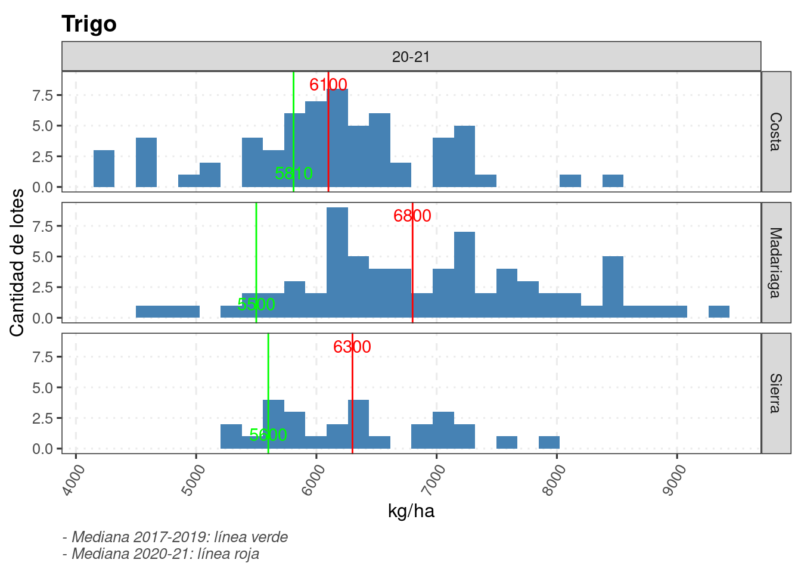

3 Rendimientos
knitr::opts_chunk$set(echo = TRUE, message=FALSE, warning=FALSE)
pacman::p_load(tidyverse, googlesheets4, googledrive)
# drive_auth(email = "edwardsmolina@gmail.com")
# gs4_auth(email = "edwardsmolina@gmail.com")
source(here::here("0 themes.R"))dat %>%
drop_na(rinde) %>%
group_by(campana, Zona, cultivo_de_cosecha) %>%
summarise(n_lotes = n(),
rinde_med = quantile(rinde, 0.5),
techo = quantile(rinde, 0.95)) -> lotes
dat %>%
drop_na(rinde) %>%
filter(!campana == "20-21") %>%
group_by(Zona, cultivo_de_cosecha) %>%
summarise(rinde_med = quantile(rinde, 0.5)) -> lotes_sum3.1 Rindes observados
(dat %>%
drop_na(rinde) %>%
filter(cultivo_de_cosecha == "Trigo") %>%
filter(between(rinde, 1000, 10000)) %>%
ggplot(aes(rinde))+
geom_histogram(fill = "steelblue")+
facet_grid(Zona ~ campana)+
labs(y = "Cantidad de lotes", x = "kg/ha",
title ="Trigo" , fill = "")+
# scale_y_continuous(breaks= scales::pretty_breaks())+
geom_vline(data=filter(lotes, cultivo_de_cosecha == "Trigo"), aes(xintercept=rinde_med), col = "red")+
geom_text(data=filter(lotes, cultivo_de_cosecha == "Trigo"),
aes(x=rinde_med, y=Inf, label=round(rinde_med,0)),
vjust=1.5,col = "red")+
# geom_vline(data=filter(lotes, cultivo_de_cosecha == "Trigo"), aes(xintercept=techo), col = "red")+
guides(fill = "none")+
theme_aapre)# ggsave(last_plot(), file = "plots/rindes_hist_tr.png", width = 5, height = 4)
#
# drive_upload(path = as_dribble("juanchi_guille/JMF_fina_2020"), "plots/rindes_hist_tr.png", overwrite = TRUE)(dat %>%
drop_na(rinde) %>%
filter(cultivo_de_cosecha == "Trigo") %>%
filter(campana == "20-21") %>% droplevels() %>%
filter(between(rinde, 1000, 10000)) %>%
ggplot(aes(rinde))+
geom_histogram(fill = "steelblue")+
facet_grid(Zona ~ campana)+
labs(y = "Cantidad de lotes", x = "kg/ha",
title ="Trigo" , fill = "")+
scale_x_continuous(breaks= scales::pretty_breaks())+
# 2020
geom_vline(data=filter(lotes, cultivo_de_cosecha == "Trigo",
campana == "20-21"),
aes(xintercept=rinde_med), col = "red")+
# serie
geom_vline(data=filter(lotes_sum,
cultivo_de_cosecha == "Trigo"),
aes(xintercept=rinde_med), col = "green")+
geom_text(data=filter(lotes_sum,
cultivo_de_cosecha == "Trigo"),
aes(x=rinde_med, y=-Inf, label=round(rinde_med,0)),
vjust=-1,col = "green")+
geom_text(data=filter(lotes, cultivo_de_cosecha == "Trigo",
campana == "20-21"),
aes(x=rinde_med, y=Inf, label=round(rinde_med,0)),
vjust=1.5,col = "red")+
labs(
caption = "- Mediana 2017-2019: línea verde\n- Mediana 2020-21: línea roja")+
theme_aapre)
# ggsave(last_plot(), file = "plots/rindes_20_serie_tr.png", width = 4, height = 4)
#
# drive_upload(path = as_dribble("juanchi_guille/JMF_fina_2020/plots"), "plots/rindes_20_serie_tr.png", overwrite = TRUE)(dat %>%
drop_na(rinde) %>%
filter(cultivo_de_cosecha == "Cebada") %>%
filter(between(rinde, 1000, 10000)) %>%
ggplot(aes(rinde))+
geom_histogram(fill = "steelblue")+
facet_grid(Zona ~ campana)+
labs(y = "Cantidad de lotes", x = "kg/ha",
title ="Cebada")+
geom_vline(data=filter(lotes, cultivo_de_cosecha == "Cebada"), aes(xintercept=rinde_med), col = "red")+
geom_text(data=filter(lotes, cultivo_de_cosecha == "Cebada"),
aes(x=rinde_med, y=Inf, label=round(rinde_med,0)),
vjust=1.5,col = "red")+
scale_y_continuous(breaks= scales::pretty_breaks())+
theme_aapre)# last_plot() %>%
# ggsave(file = "plots/rindes_hist_ceb.png", width = 5, height = 4)
# drive_upload(path = as_dribble("juanchi_guille/JMF_fina_2020"), "plots/rindes_hist_ceb.png", overwrite = TRUE)(dat %>%
drop_na(rinde) %>%
filter(cultivo_de_cosecha == "Cebada") %>%
filter(campana == "20-21") %>% droplevels() %>%
filter(between(rinde, 1000, 10000)) %>%
ggplot(aes(rinde))+
geom_histogram(fill = "steelblue")+
facet_grid(Zona ~ campana)+
labs(y = "Cantidad de lotes", x = "kg/ha",
title ="Cebada" , fill = "")+
scale_x_continuous(breaks= scales::pretty_breaks())+
# 2020
geom_vline(data=filter(lotes, cultivo_de_cosecha == "Cebada",
campana == "20-21"),
aes(xintercept=rinde_med), col = "red")+
# serie
geom_vline(data=filter(lotes_sum,
cultivo_de_cosecha == "Cebada"),
aes(xintercept=rinde_med), col = "green")+
geom_text(data=filter(lotes_sum,
cultivo_de_cosecha == "Cebada"),
aes(x=rinde_med, y=-Inf, label=round(rinde_med,0)),
vjust=-1,col = "green")+
geom_text(data=filter(lotes, cultivo_de_cosecha == "Cebada",
campana == "20-21"),
aes(x=rinde_med, y=Inf, label=round(rinde_med,0)),
vjust=1.5,col = "red")+
labs(
caption = "- Mediana 2017-2019: línea verde\n- Mediana 2020-21: línea roja")+
theme_aapre)
3.2 Brechas
potencial <-
dat %>%
mutate_if(is.character, as.factor) %>%
filter(cultivo_de_cosecha %in% c("Trigo", "Cebada")) %>%
filter(dano_tot < 10,
rinde > 1000) %>%
# riego == "NO") %>%
group_by(Zona,
campana,
cultivo_de_cosecha) %>%
summarise(.groups = 'drop',
lotes = n(),
rinde_50 = quantile(rinde, 0.5, na.rm = TRUE),
rinde_90 = quantile(rinde, 0.90, na.rm = TRUE),
rinde_95 = quantile(rinde, 0.95, na.rm = TRUE),
dif = round((rinde_95-rinde_50)/rinde_95*100,1),
label = paste(round(dif, 0), "%", sep=""),
n_lotes = paste("(", round(lotes, 1), ")", sep="")) %>%
complete(Zona, nesting(campana, cultivo_de_cosecha))
# potencial %>%
# write_sheet(ss=jmf, sheet = "potencial")
# potencial%>% viewggplot(potencial) +
facet_wrap("campana")+
geom_bar(aes(x=Zona, y=rinde_90, fill = cultivo_de_cosecha), position=position_dodge(width=0.9),
stat="identity",
alpha=0.5)+
geom_text(aes(Zona, rinde_90, fill = cultivo_de_cosecha,
label=round(rinde_90,0)),
stat="identity",
position=position_dodge(width=0.9),
vjust = 0, hjust=0.5, size = 3)+
geom_bar(aes(x=Zona, y=rinde_50, fill = cultivo_de_cosecha),
position=position_dodge(width=0.9),
stat="identity")+
geom_text(aes(Zona, rinde_50, fill = cultivo_de_cosecha,
label=round(rinde_50,0)), position=position_dodge(width=0.9),
vjust = 1, hjust=0.5, size = 3)+
labs(x = "",
y = "kg/ha",
title = "Rendimientos 50° y 90°",
fill = "",
caption =
"- Barras: 50° y 90° percentil\n
- Excuidos: daño por adversidades > 10%, rinde < 1000 kg/ha\n
- Numero de lotes entre paréntesis"
)+
scale_y_continuous(breaks= scales::pretty_breaks(),
expand = c(0.2, 0))+
theme_bw2# ggsave(last_plot(), file = "plots/potencial_tr_ceb.png", w=7, h=6)
# drive_upload(path = as_dribble("juanchi_guille/JMF_fina_2020"), "plots/potencial_tr_ceb.png", overwrite = TRUE)potencial %>%
filter(cultivo_de_cosecha == "Trigo") %>%
ggplot() +
facet_wrap("campana")+
geom_bar(aes(x=Zona, y=rinde_95),
# position=position_dodge(width=0.9),
stat="identity",
fill = alpha("#ff1212", 0.5))+
geom_text(aes(Zona, rinde_95,
# fill = cultivo_de_cosecha,
label=round(rinde_95,0)),
stat="identity",
# position=position_dodge(width=0.9),
vjust = 0, hjust=0.5, size = 3)+
geom_bar(aes(x=Zona, y=rinde_50),
# position=position_dodge(width=0.9),
stat="identity",
fill = alpha("#1212ff", 0.5)
)+
geom_text(aes(Zona, rinde_50,
# fill = cultivo_de_cosecha,
label=round(rinde_50,0)),
# position=position_dodge(width=0.9),
vjust = 1, hjust=0.5, size = 3)+
geom_text(aes(Zona, y=((rinde_95-rinde_50)/2)+rinde_50,
# fill = cultivo_de_cosecha,
label=label),
# position=position_dodge(width=0.9),
vjust = 0, hjust=0.5, size = 3, fontface="bold")+
geom_text(aes(Zona, y=-Inf,
# fill = cultivo_de_cosecha,
label=n_lotes),
# position=position_dodge(width=0.9),
vjust = -2, hjust=0.5, size = 3, fontface="bold")+
labs(x = "",
y = "kg/ha",
title = "Potencial de rendimiento - Trigo",
# fill = "",
caption =
"- Barras: percentiles 95° (rosa) y 50° (violeta)\n- Excluidos: daño por adversidades > 10%, rinde < 1000 kg/ha\n- Numero de lotes entre paréntesis"
)+
theme_dens1